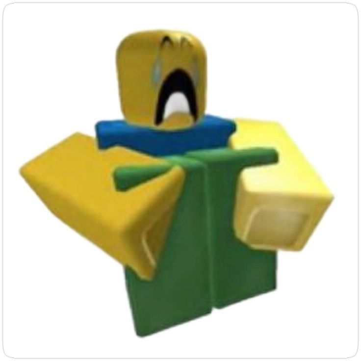

Обо мне
Я KakaoMinz! а мое имя Даша Р.)). Я люблю рисовать и играть в игры еее
Мои любимые предметы
- Проектирование информационных систем
- Проектный практикум
- Разработка информационных систем в агропромышленном комплексе на платформе 1С
Мои любимые фильмы, книги и передачи сейчас!!!!
- Молчание ягнят (1990) Кинопоиск
- Анатомия искусства. Вечные темы живописи Wildberries
- Ты и 10 твоих клонов | The Alters YouTube
Мои эго)))
Счастье:
Грусть:
